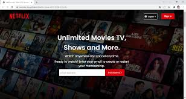

DEPARTMENT OF COMPUTER SCIENCE & ENGINEERING
WEB TECHNOLOGIES

1. One-page Layout or Design
Creating a one-page responsive design/layout is a great web development project for beginners. It is a popular web project, particularly for individuals who want to practice their web development knowledge by creating a simple yet fully-operational website. This website could be made in a user-friendly manner and present all the necessary information concisely. You can complete this project by following the below steps:
- 1.Plan the content.
- Choose a design concept.
- Design the page layout.
- Develop the website by writing code.
- Once developed, test the website to ensure that it works properly.
- If it passes the test, the website is suitable to launch.
Source code:one-page-Layout
2.Product Landing Page
Creating a product landing page is one of the most common web development projects for students looking to apply their understanding of web development in real life. A product landing page is a focused web page designed to drive conversions and typically includes product details, benefits, and calls to action. Working on this project will give you an opportunity to add some advanced features, like CTAs, to a basic webpage. This project requires you to know HTML, CSS, and JavaScript. Here are the steps for creating a product landing page:
- Identify the target audience.
- Develop the messaging and value proposition.
- Design the layout and user interface.
- Create clear calls to action.
- Develop the landing page.
- Test and launch the landing page.
Source code:Netflix Clone
3. Netflix Home Page Clone

Creating a Netflix home page clone is a popular one for those interested in learning web development and improving their skills as a beginner. This project involves creating a webpage visually similar to the Netflix home page, including the layout, design, and functionality. This dynamic Netflix clone website project will offer all the tools you need to learn full-stack programming, helping you to master more functionalities. You will also work with a Node.js server to power it and TMDB API to handle all data.
- Plan the project and select the elements.
- Build the layout and add functionality.
- Use responsive design techniques and develop the webpage.
- Test and launch the webpage.
Source code:Netflix Clone
4.Quiz App
Creating a quiz app is a fun yet challenging project that can help you improve your web development, front-end development, and user experience design skills all at once. This project aims to create a web application that allows users to take quizzes and receive feedback on their performance. By adding certain gifs representing winning and losing the game, you can optionally award the user a score after the game and then declare them a winner if their score exceeds the threshold. An exciting way to practice web development, isn't it?
Source code:Quiz app
5. Background Generator
A background generator is a great way to practice CSS skills and familiarize yourself with basic JavaScript concepts. In this project, you will select a basic or a gradient colour and generate it via code. You will then create a webpage that generates random background colours and allows users to customize and copy the generated colour code. This will help you practice your basics and give you a touch of interface design.?
- Plan the project and design the layout.
- Add functionality.
- Use CSS and add JavaScript.
- Test and launch the background generator.